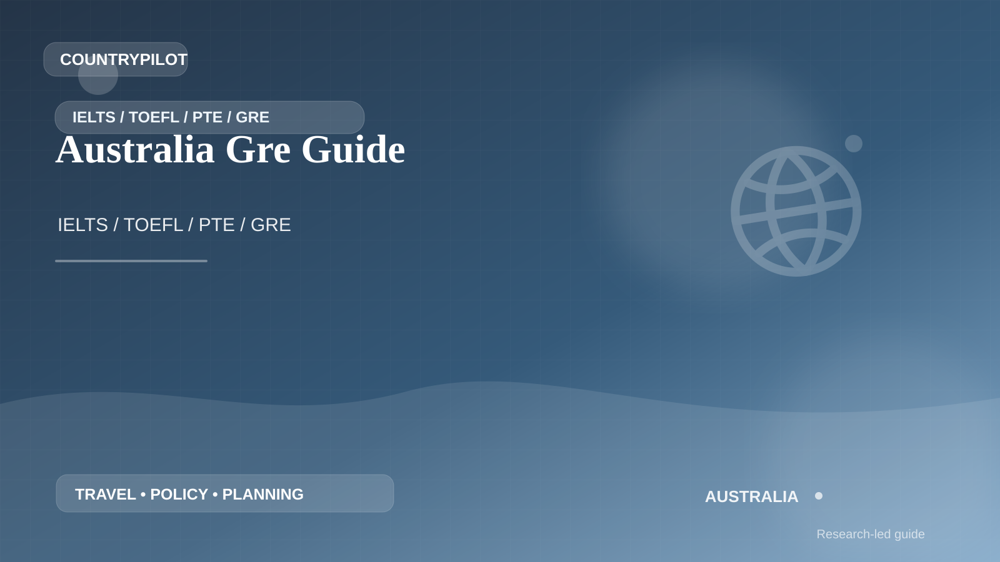

AustraliaAustralia · IELTS / TOEFL / PTE / GRE
Australia Gre Guide
The right test for Gre Guide is the one the receiving university, scholarship body, regulator or immigration route actually accepts. A higher score on the wrong exam can still be useless.